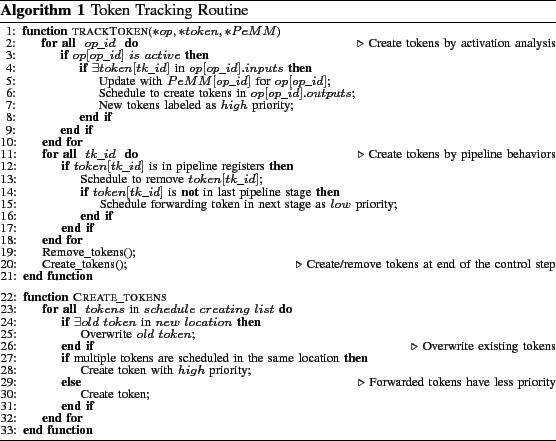

Next: Results in Reliability Estimation
Up: Approximate Error Prediction Framework
Previous: Error Representation
Since no actual faults are injected but only abstract tokens, the simulator maintains correct execution flow while indicates potential errors. Algorithm 1 shows the token tracker routine called between consecutive processor control steps. The routine is performed for each clock cycle and starts with the activation analysis of LISA operations. If any operations whose inputs contain tokens are activated, the tokens are updated by PeMMs and propagate to the outputs of the operation by the end of the cycle. Due to synchronized register behaviors, the tokens cannot be immediately created or removed before the completion of analysis for the current cycle, but are scheduled for creation and removal. After activation analysis for operations, the tokens in pipeline registers are forwarded to the next pipeline stage. However, forwarded tokens have less priority compared with the ones created from the active operations. For memory and register files, old tokens are overwritten by new arriving ones.

Zheng Wang A Chattopadhyay
2014-07-16